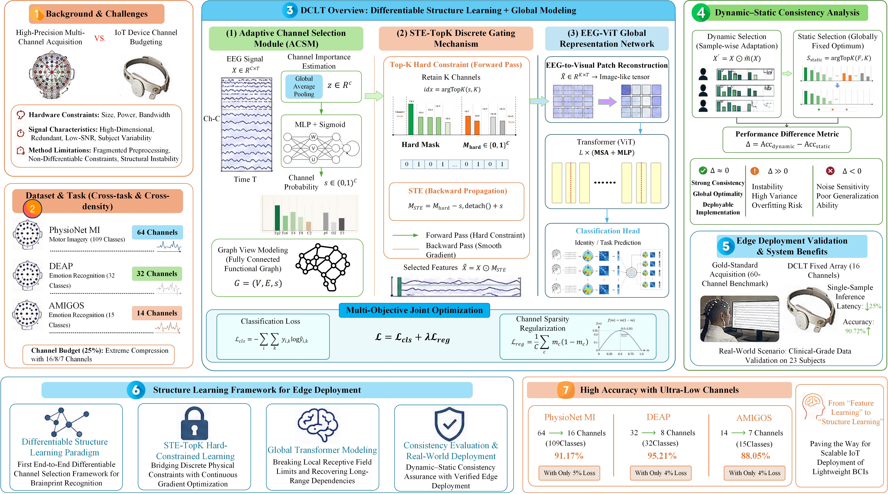
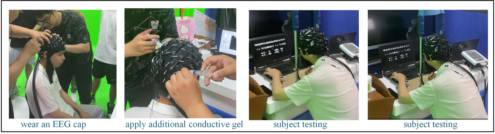
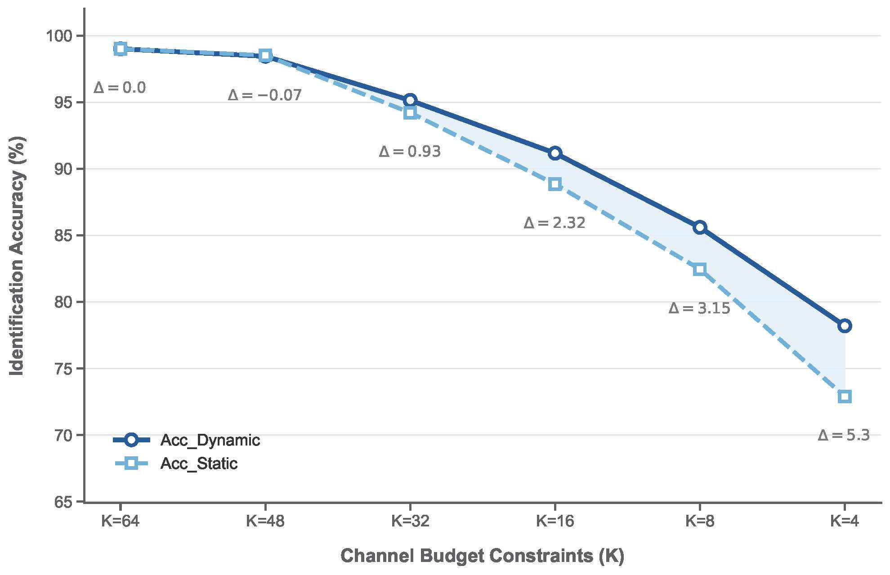
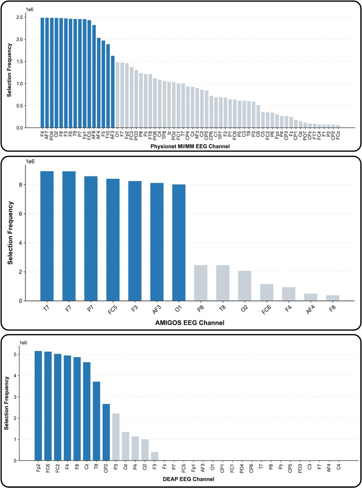
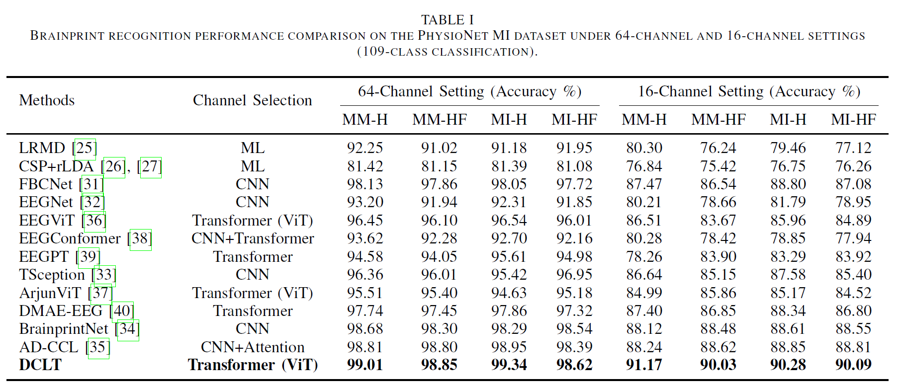
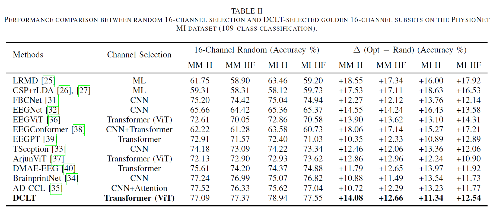
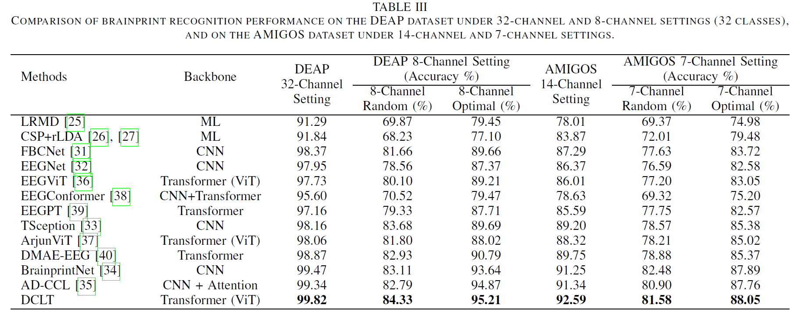
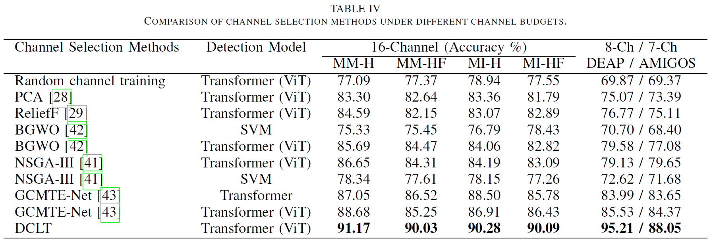
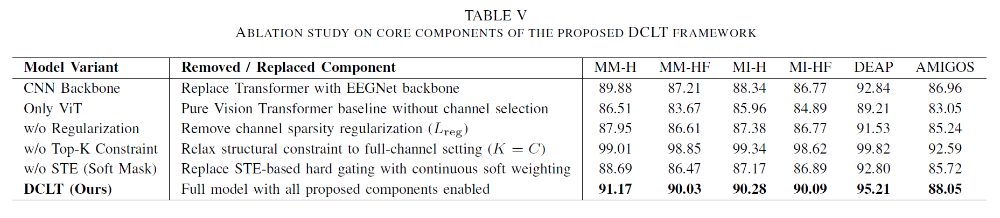
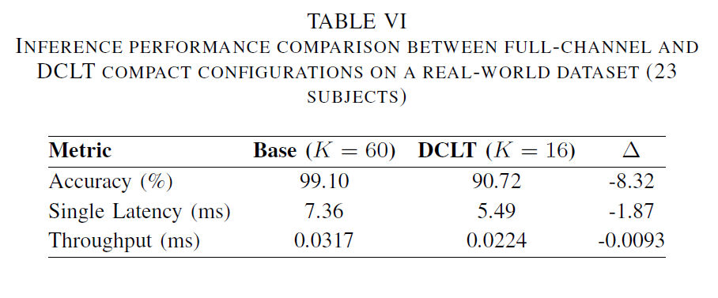

Edge-Deployable Brainprint Authentication for Resource-Constrained IoT: A Differentiable Structure Learning Framework
Abstract
High-precision Electroencephalogram (EEG) analysis typically relies on dense multi-channel arrays, creating a fundamental conflict with the strict low-channel and low-power budgets of Internet of Things (IoT) edge devices. This bottleneck severely hinders the practical deployment of emerging wearable Brainprint Authentication systems. Furthermore, existing channel selection methods often lack end-to-end optimization and mechanistic interpretability. To address these challenges, we propose the Dynamic Channel Learning Transformer (DCLT), a unified framework formulating EEG channel selection as Differentiable Structure Learning tailored for IoT-based brainprint recognition. DCLT employs a Straight-Through Estimator (STE)-driven Top-K discrete gating mechanism, achieving a unified optimization of hard physical channel constraints and continuous gradient updates. A Transformer architecture then globally models the reconstructed sparse features. Furthermore, we introduce Dynamic-Static Consistency Analysis to evaluate the model's structural stability and hardware deployability beyond mere predictive accuracy. Extensive experiments across three datasets demonstrate that DCLT maintains over 90% identification accuracy while retaining only 25% of the original channels. Finally, edge-constrained deployment on clinical-grade data from 23 subjects confirms that DCLT significantly reduces computational complexity and inference latency. Ultimately, DCLT advances EEG analysis from feature learning to structure learning, enabling robust and lightweight IoT brain-computer interfaces.
Methodology

Schematic diagram of the overall architecture of the DCLT framework, illustrating the unified "differentiable structure learning + global modeling" approach.

Real-world EEG data acquisition environment and edge-oriented deployment validation involving 23 subjects.

Performance consistency evolution between dynamic routing and global static subsets under varying channel budgets.

Visualization of the selected electrode frequencies across different functional brain regions.
Experimental Results
The following tables present the quantitative performance of our proposed DCLT framework compared to state-of-the-art baselines across multiple datasets and varying channel budget configurations.
Table I: Brainprint Recognition Performance on the PhysioNet MI Dataset (64 vs. 16 Channels)

Table II: Random vs. DCLT-Selected 16-Channel Subsets on the PhysioNet MI Dataset

Table III: Performance on DEAP (32 vs. 8 Channels) and AMIGOS (14 vs. 7 Channels) Datasets

Table IV: Comparison of Channel Selection Methods Under Different Channel Budgets

Table V: Ablation Study on Core Components of the Proposed DCLT Framework

Table VI: Inference Performance Comparison for Edge Deployment on a Real-World Dataset
